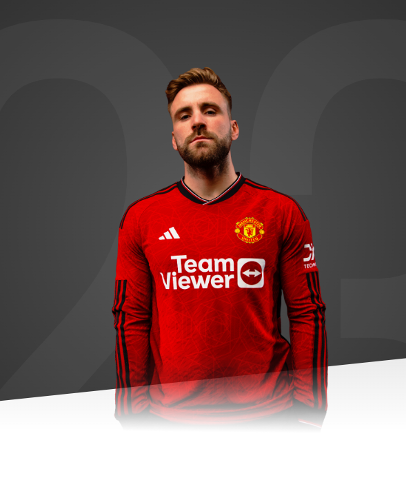

I've got the freedom to play and that gives me the confidence in what I want to do to help the team.

AGE
28
APPEARANCES
262
CLEAN SHEETS
4
BIOGRAPHY
Luke Shaw joined Manchester United from Southampton in June 2014, making him one of the Reds' longest-serving players.
The talented defender's Southampton career began in 2004, when he joined the south-coast outfit as a 10-year-old, after being released by boyhood favourites Chelsea.
Shaw then rose through the ranks and made his first-team debut in 2012, aged 16. He went on to nail down the left-back spot at the club, as he flourished under the tutelage of Nigel Adkins and Mauricio Pochettino, eventually amassing 67 appearances for the Saints before leaving for United.
Although injuries disrupted his debut campaign at Old Trafford, when he made just 20 first-team outings across all competitions, the defensive livewire convinced many observers that he could become an important cog in the Reds' machine. However, the left-back endured a nightmare 2015/16 campaign, as he suffered a horrific leg break in a Champions League game with PSV Eindhoven, which ruled him out for the season.
The England international returned to training in April 2016 and was desperate to impress new boss Jose Mourinho in 2016/17 but, sadly, it was largely a season of niggling injuries that hampered his progress. He managed to make 19 appearances across all competitions and repaid his manager's faith with some strong showings, before a foot problem ended his campaign prematurely.
The following season proved just as frustrating for Shaw and again he only made 19 first-team appearances. However, the defender was always reliable when called upon and played a significant role in United's run to the FA Cup final.
The 2018/19 campaign proved to be much more fruitful for Shaw, at least on a personal level. He began the season in superb form, scoring the first goal of his senior career in the Reds' opening-day win over Leicester City and winning the club's Player of the Month awards for both August and September. His impressive displays earned him a recall to the England squad in August and two months later he was rewarded with a new contract at United.
After picking up a third Player of the Month prize in March 2019, Shaw went on to win the Sir Matt Busby Player of the Year award, as voted for by the supporters, and the Players' Player of the Year accolade.
He repeated the later success in 2021, at the end of a stellar campaign which saw Luke emerge as one of the Premier League's best left-backs and secure a place in Gareth Southgate's 26-man selection for the delayed European Championships.
Following his heroic exploits at the European Championships, Shaw hit the ground running for United in the 2021/22 season. Our left-back started 11 of our first 12 Premier League matches and played a key role in our progression from the Champions League group stage.
However, a string of injuries led to Shaw featuring only 11 more times for the Reds between January and the end of the season, with the England international missing the Premier League run-in.
Shaw returned back to full fitness and form in 2022/23 under Erik ten Hag, making 47 appearances and scoring one goal as United won the Carabao Cup and finished third in the Premier League.
The left-back was also heavily involved in England's run to the World Cup quarter-finals in Qatar and he is now undisputed first choice in the position for club and country, having signed a new deal with the Reds in April 2023.